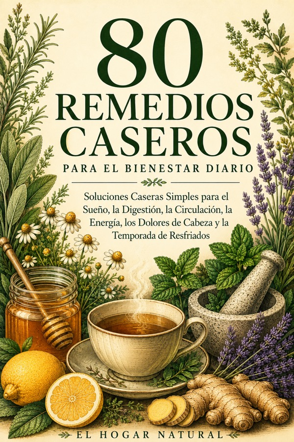

80 remedios caseros simples para las molestias de todos los días, hechos con lo que ya tienes en la cocina. Pensado para personas a partir de los 50 años.
Las pequeñas molestias de todos los días, esas que muchas veces te dicen que “son cosa de la edad”.
No siempre necesitas algo complicado. A veces basta con un remedio sencillo, de los de siempre.
Una colección de 80 remedios caseros suaves, de los que tu abuela conocía y nadie escribió. Son medidas de alivio y bienestar, no tratamientos médicos, para ayudarte a sentirte un poco mejor y un poco más acompañado en el día a día.
80 remedios organizados por problema cotidiano.
Todo lo que necesitas, con medidas claras.
Pasos cortos y numerados, sin complicaciones.
Cuándo tomarlo y en qué cantidad.
Una nota honesta en cada receta. Tu seguridad va primero.
Pago único. Acceso inmediato al PDF, para leer en cualquier dispositivo o imprimir.
Comprar ahora por US$ 9,99Es un libro digital (PDF). Apenas se confirma tu compra, recibes el acceso por correo para descargarlo al instante y leerlo en el celular, la tablet o la computadora. Si prefieres, también puedes imprimirlo.
Los remedios son medidas caseras de alivio, no tratamientos médicos. Cada uno trae un aviso de seguridad. Consulta siempre a tu médico o farmacéutico antes de probar cualquiera, sobre todo si tomas medicamentos o tienes alguna condición de salud.
No. Este libro no diagnostica, ni trata, ni cura ninguna enfermedad, y nunca reemplaza a tu médico ni a los remedios que te hayan recetado. Es un acompañante para las pequeñas molestias del día a día.
Un remedio sencillo puede ser todo lo que necesitas para sentirte un poco mejor.
Quiero mi libro por US$ 9,99